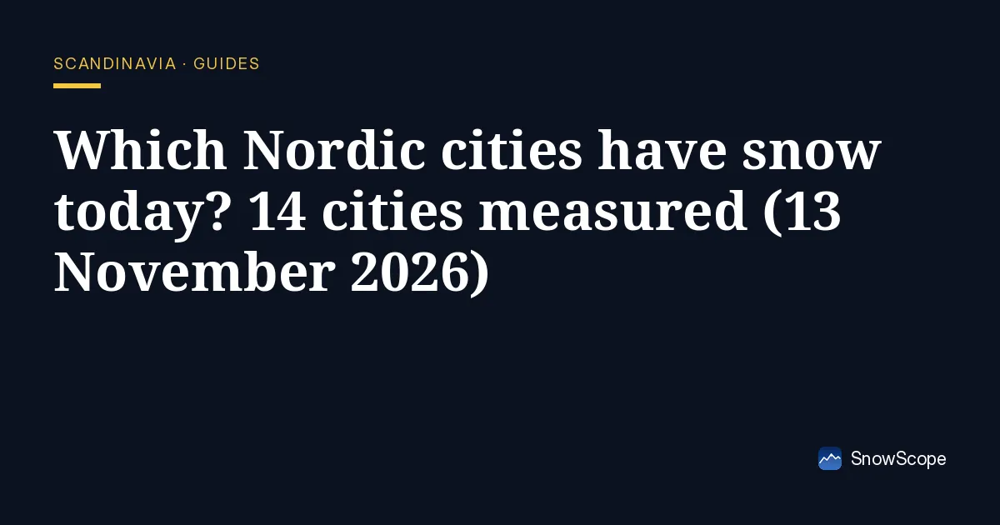

Which Nordic cities have snow today? 14 cities measured (13 November 2026)
On Friday morning, the Nordic snow divide ran north-south rather than east-west, with the Bothnian coast and inland Sweden far whiter than the Arctic Circle. Measuring 14 big cities from Bergen to Tromsø shows a winter landscape in mid-transition: some places buried, others still green, and one far-north surprise with no snow at all.
See the live snow forecast for Scandinavia in the SnowScope appSnow depth, powder alerts and the 3D map, free.
The white zone: hills above Oslo lead; Umeå and Östersund follow
Oslo's height advantage is striking. The city centre at Blindern sits with just 4 cm, the depth measured at the weather station. But 8 km north, up at Tryvannshøgda at 528 m, the snow reaches 37 cm. This is the deepest reading in any of the 14 cities. The pattern is clear: gain height, gain snow.
On the coastal plain, Umeå tops the list with 20 cm at Röbäcksdalen on the city edge. Almost all of it arrived in two days; the ground was bare on Wednesday. Östersund's readings vary with location: 19 cm at Norderön and 24 cm at Marby, both lakeside stations tracking the same storm that hit Umeå. Neither city had measurable snow four days ago.

Tromsø and the high mountains of the north
Tromsø's city station on the island reads 6 cm, but travel 45 km south into the mountains and Lyngen Gjerdvassbu at 710 m has 44 cm. This shows the split between Arctic coast and inland peaks. The city itself is thin; the upland valleys hold the season's accumulation.
The coastal towns of far northern Norway—Bardufoss, Nordstraum—have 3 to 8 cm. This is a region where most winters have snow by mid-November, but this year the cover is patchy. Luleå airport sent no reading, though the five nearest stations 35 to 60 km away show 3 to 7 cm, all new since Thursday.
Trondheim: a city caught between coast and valley
Trondheim's city stations report no snow depth at all. The fjord-side ground is still bare. But move inland and uphill, and snow appears: 5 cm at Meråker 67 km east, and 18 cm at Tågdalen 78 km southwest at 415 m elevation. The city lies in the driest pocket of the region, sheltered from the storms that have drenched the mountains.
By Friday evening Trondheim itself may still have no snow cover, even as the high routes and inland forests are white. This is typical of mid-November on the Trøndelag coast.
Kiruna's vanishing act and the Arctic surprise
Kiruna breaks all expectations. The town station at 519 m reads 0 cm, and so do Jukkasjärvi and Esrange. This is extraordinary. SnowScope's history shows that Kiruna has had snow on this date in all 46 past winters on record, with a median of 23 cm. Last year at this time it held 24 cm. This year: nothing.
The wider pattern north of the Arctic Circle shows the same shock. Of 22 Swedish stations north of latitude 66°N, only 5 measured any snow at all, and the deepest is just 9 cm. The cold Arctic air has arrived without the moisture to build a cover.
Green cities: the south holds its ground
Stockholm, Göteborg, Helsinki, Tampere, and Bergen are all bare. No snow at the central stations in any of these capitals, which is normal for mid-November. The nearest white patch to Stockholm lies 75 km north. Gunntorp, inland from Göteborg, has 12 cm—the deepest snow south of the 60th parallel—but the coast itself remains green.
Bergen at sea level on the west coast is dry with no snow. The hills above Bergen—Kvamskogen and Mjølfjell—hold 5 to 10 cm, but the city itself is a week or more away from its first lasting cover.
The weekend forecast: snow for the highlands, rain for the coasts
The north receives a small top-up. Tromsø and Kiruna are forecast to gain about 2 cm. Rovaniemi, further south but inland, may see around 5 cm. Umeå and Östersund stay dry and cold.
The south turns milder and wetter. Bergen faces heavy rain on Saturday and Sunday, around 40 mm, which will strip away any thin early cover in the low valleys. The cold that locked in the mid-Sweden snow begins to ease. The snow line stays roughly where it is now: across the middle of Scandinavia, with the Arctic coast cold but bare and the southern capitals still waiting for November to feel like winter.
Tips for skiers
- To find white ground in a Nordic city this weekend, go north: Umeå, Östersund, and Rovaniemi are your safest bets. Tromsø and Kiruna will gain a few centimetres but remain thin.
- In Oslo, don't walk through the city centre looking for snow. Take the metro north to Nordmarka; the snow lives in the hills, not the streets.
- Kiruna visitors: the town is bare today. If you need snow, drive inland towards the Norwegian border and the mountain valleys, where 44 cm sits at Lyngen Gjerdvassbu.
- In the south—Stockholm, Göteborg, Helsinki, Bergen—accept that snow is still weeks away. This is normal mid-November. Early season cover is thin and rough; rocks lie close beneath.
- Watch the forecast for the weekend. Bergen gets rain; the Arctic gets cold. The snow divide hardens rather than fading.
About these numbers
Resort snow depths are the deepest snow on the resort's upper slopes on the date shown; they are estimates for an area, not a measurement at one point. Forecasts can change. Always read the official avalanche bulletin before going off-piste.
Cite this report
For research, teaching or the press: the numbers and charts are free to reuse under CC BY 4.0 with this citation.
SnowScope (2026), Which Nordic cities have snow today? 14 cities measured (13 November 2026), https://snowscope.app/blog/en/2026/11/nordic-cities-snow-today-13-november-2026.html, accessed 2026-11-13
SnowScope (Atlas Labs). (2026, November 13). Which Nordic cities have snow today? 14 cities measured (13 November 2026). SnowScope snow reports. https://snowscope.app/blog/en/2026/11/nordic-cities-snow-today-13-november-2026.html
BibTeX
@misc{snowscope2026nordiccitiessnowtoday13n,
author = {{SnowScope (Atlas Labs)}},
title = {Which Nordic cities have snow today? 14 cities measured (13 November 2026)},
year = {2026},
month = nov,
howpublished = {\url{https://snowscope.app/blog/en/2026/11/nordic-cities-snow-today-13-november-2026.html}},
note = {Published 2026-11-13 18:09 UTC; accessed 2026-11-13}
}· CC BY 4.0 · Methods, data and tools →
Follow Scandinavia
Free: a message when fresh snow is coming, and the forecast every morning.
More snow reports

Hemavan's mid-mountain has 82 cm of snow on a typical 15 December. Every winter in 46 years had 30 cm or more in mid-December. Data from 13 November 2026.

Hafjell has about 2 cm at the top on 14 November. The forecast adds 9 cm next week, but the base stays bare.

Geilo's mid-mountain stays skiable in 96% of Decembers. Typical depth on 15 Dec: 42 cm base, 57 cm mid, 68 cm top. Day pass from NOK 590.